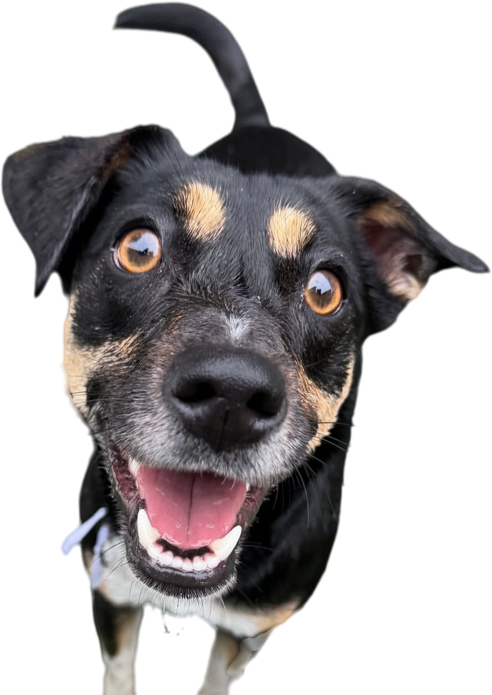
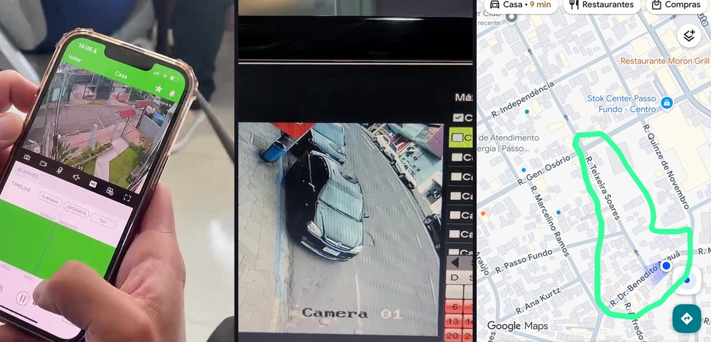
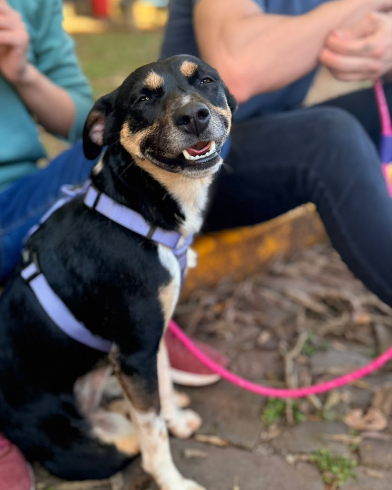

Salva esse post
5 coisas que
a gente faria
diferente.
Se eu sumisse de novo.
(não vou.)

REC
1
Ir atrás das câmeras no primeiro dia.
Muitas câmeras gravam por cima depois de alguns dias. Foram elas que mostraram por onde eu passei.
eu apareci em várias. sem querer.
2
Coleira com nome e
telefone.
Quem me visse poderia ligar na hora, sem depender de post, de grupo ou de sorte.
um telefone no pescoço resolve muita coisa.
5 coisas · Zoe
3
Avisar clínicas veterinárias e pet shops.
Quem me reconheceu foi uma veterinária. Elas veem muito bicho, todo dia.
obrigada, doutora.
5 coisas · Zoe
4
Ter fotos boas e
atuais.
De corpo inteiro, de frente e de lado, mostrando as marcas. Ajuda a separar quem é parecida de quem é você.
teve muita cachorra parecida comigo. não era eu.
5 coisas · Zoe
5
Nunca mandar dinheiro antes de ver o animal.
Durante a minha busca, pediram dinheiro pra gasolina. Depois, pra um problema no carro.
Era golpe.
quem achou de verdade manda foto.
5 coisas · Zoe

Salva esse post.
E manda pra quem tem bicho em casa. Tomara que nunca precise.
Zoe | Causas Animais
Passo Fundo/RS
Seguir
eu aprendi do jeito difícil. você não precisa.